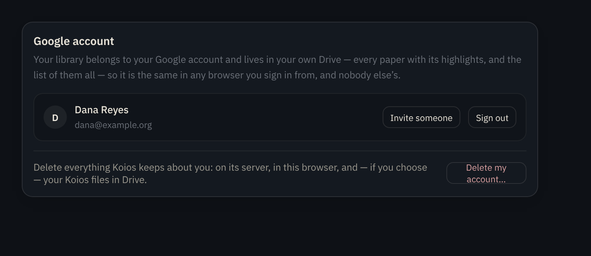
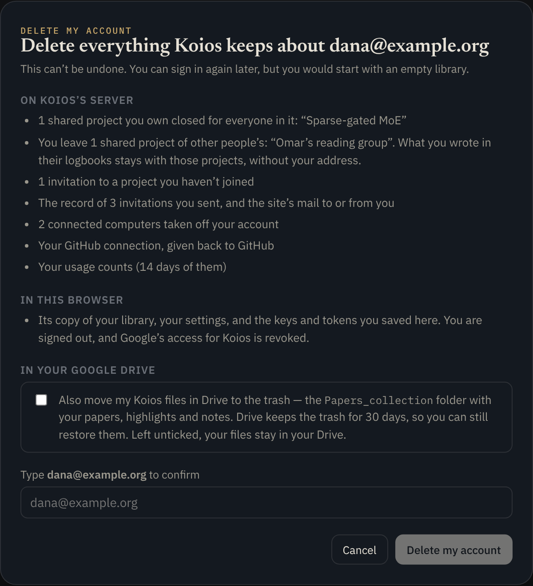
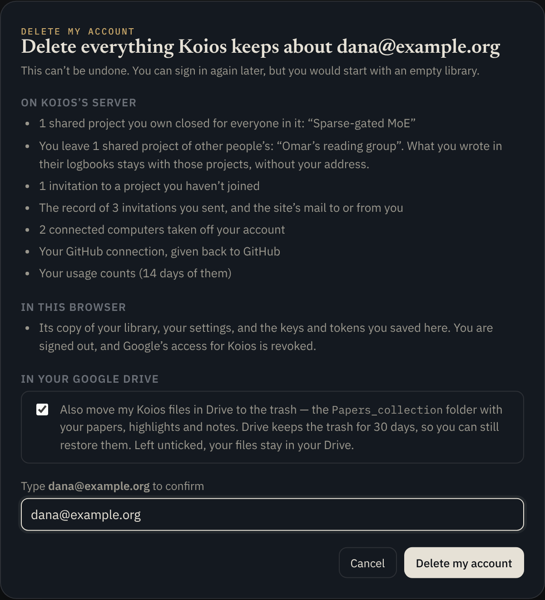
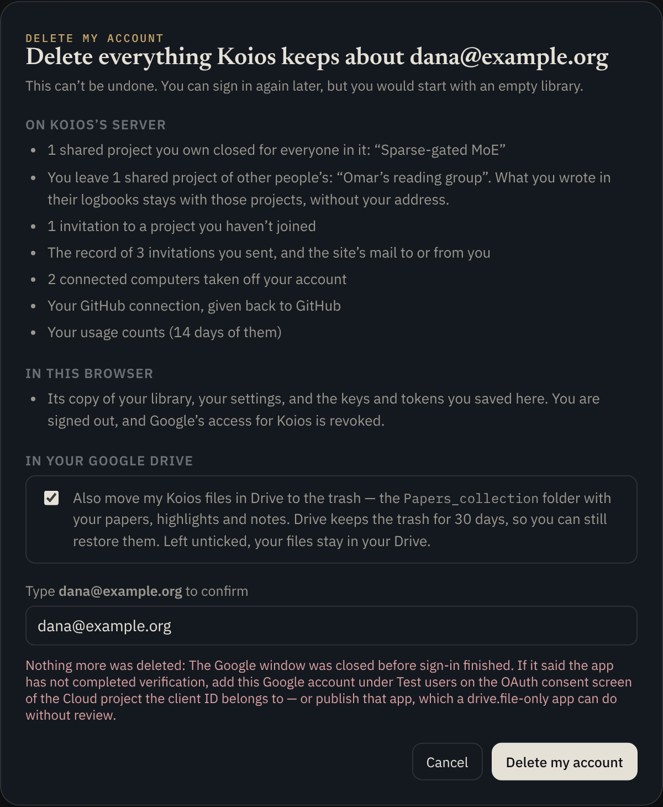

Koios · docs/delete-account
What Koios keeps about a person, where, and what happens — in order, with the code that does each part — when they delete their account from Settings.
Koios has no database of its own and no account to create: signing in with Google is the account. Even so, using the site leaves records in three places, and each has its own owner and its own way of being deleted.
| Store | Named by | What is kept about a person | Code |
|---|---|---|---|
| Shared projects | one object per room (room:<id>) | the room's owner; a member record (email, role, name, picture); invitations by email; "last seen"; and the logbook, where each note, link and stroke says who wrote it (by) and meeting notes list attendees | worker/projectRoom.js, worker/logbook.js |
| Invitations ledger | one object for the site | every invitation sent (by whom, to whom, whether taken up), personal links and who joined from them, which rooms each account is in (rooms:<email>), and the site's mail log | worker/invites.js |
| Usage tally | one object for the site | per day, per email: sign-ins, searches, PDFs fetched, AI calls and their cost — the owner's Usage page | worker/usage.js |
| Computers | one object per email (devices:<email>) | each Koios Companion the account connected: name, hardware, its address and Jupyter token | worker/devices.js |
| GitHub, Overleaf | KV keys, the email hashed | the tokens, sealed with SECRETS_KEY; when added and last used | worker/github.js, worker/latex.js, worker/secrets.js |
| Browser pane | per browser (client id), not per email | the open session, a short log of pages opened, sites that showed a captcha; and in KV the sign-in cookies the pane kept | worker/browserSession.js, worker/browse.js |
| The pass | — | nothing: the 30-day pass is signed, not stored (server/passes.js). It stops working only when it expires. | server/passes.js |
Signed in, Settings → Account shows the Google account card. Under the account row is a quiet line with the one button that starts the deletion. It is deliberately not red and not large: it is there when wanted, and nowhere near Sign out.

src/components/Settings.tsx, the set-danger row). The button opens the dialog; nothing happens yet.The dialog (src/components/DeleteAccount.tsx) is built so that the person knows exactly what will go before they can press anything. Opening it does one read and no writes.
On opening, the page calls readAccount() (src/lib/account.ts), which is GET /account with the person's pass. The server answers with a summary (accountSummary in worker/account.js): the shared projects they own and the ones they joined (by name), invitations waiting, computers connected, days of usage counted, invitations sent, and whether a GitHub or Overleaf connection exists. Nothing is changed by this call.
On Koios's server — one line per thing the summary found, with project names in quotes so the person can recognise them. In this browser — always the same: the library copy, settings, saved keys; signed out; Google's access revoked. In your Google Drive — a checkbox, off by default.
The Delete button stays disabled until the person types their own email address exactly (case does not matter). Cancel is always available; clicking outside the dialog closes it too, except while deleting.


Everything from here is deleteAccount() in src/lib/account.ts. The order matters: Drive needs the Google token that signing out revokes, so Drive goes first; the server needs the pass and the token, so it goes before the browser forgets them; the browser's own copy goes last, and only then does the page sign out and start again.
If the Drive box is ticked, ensureDriveToken(clientId) is used: it returns the live token when it already carries the Drive scope, and otherwise renews quietly on the existing grant, throwing if Drive was never granted. If the box is not ticked, any live token will do (liveAccessToken()), with the same renewal as a fallback. The token is needed in either case, because the server will ask for it in step 3.
trashDrive(token)With the drive.file scope, a listing of Drive returns only files the app itself created, wherever the person has since moved them. The page lists them all (fields=id,parents,ownedByMe, following pages), then finds the roots: files whose parent is not itself one of the app's files. Trashing a root takes its whole tree with it, so Papers_collection goes in one request even if it holds hundreds of papers. Files the person does not own (a collaborator's folder shared into their Drive) are skipped: they are not theirs to trash, and trying would fail and stop the deletion.
Then, if the token has the drive.appdata scope, the hidden copies (library.json, playgrounds.json in the app-data space) are deleted outright: Drive has no trash for app-data files.
Drive's trash keeps files for 30 days, and the person can restore anything from it themselves.
DELETE /accountOne request, with three things on it: the pass in Authorization, the Google token in X-Google-Token, and a JSON body { "rooms": [...] } listing the room ids of every shared project this browser's library knows (see §7). The browser's client id goes along as always, in X-Reader-Client, so the server can also clear what it keeps by browser. If the answer is not OK, the page throws here with the server's reason, and nothing below runs.
deleteLibraries(email, andGuest)The app's open IndexedDB connection is closed, then the database reader:<email> is deleted (src/lib/db.ts). If the "guest" database — the one a browser uses before anyone signs in — was claimed by this account when it first signed in, it is deleted too; otherwise it is left, since its papers were never this account's. Then every localStorage and sessionStorage key beginning reader. is removed: settings (which hold the pass), saved AI keys, layout, the Google session for the hour.
google.signOut()The Google access token is revoked with Google, the desktop app (if the page is in it) hands back the grant it kept, and the other tabs of the site are told to sign out and reload.
A pagehide listener clears the reader.* keys a second time as the page unloads, so anything the app wrote back in the last moment goes too. The page then navigates to the site's root, signed out, with an empty guest library.
The route is in worker/index.js (/account). A pass alone would be a weak basis for deleting someone: it lasts 30 days, and a pass that leaked — from a shared computer, say — should not be enough to destroy an account. So deleting needs two proofs that agree.
ALLOWED_ORIGINS); anything else is refused with 403 before any work.authorized() reads and verifies it. No pass, or a pass for an address that READER_EMAILS no longer allows: 401. The site owner's own secret (READER_TOKEN) names no email, so it cannot delete anyone either.googleEmail() (server/passes.js) sends it to Google's tokeninfo endpoint and accepts the answer only if the token was issued to this app's client id, the address is verified, and the token has not expired. A token from another site, or an old one, yields nothing.reauth: true, and nothing is deleted. The dialog shows the message and the person can sign in again and retry.GET /account — the summary — needs only the pass: it reveals nothing that the person's own pages do not already show, and changes nothing.
eraseAccount(env, email, { client, rooms, browserSession }) in worker/account.js visits each store in turn. Each store has one small internal route for forgetting a person; none of those routes is reachable from the internet (§10). A store that is not bound in this deployment, or that does not answer, is skipped and named in the answer's skipped list, so the rest still happens.
worker/projectRoom.js, route /erase)For each room id (from the ledger, the inbox of invitations, and the list the page sent), the room object is asked to erase the person. What it does depends on their part in it:
The scrub. What the person wrote in someone else's logbook is that project's record of its meetings and links, so it stays — but their address does not. Every note, link, stroke and the shared pad whose by is their address gets by: ''; meeting notes drop their address from attendees; invitations they sent to others keep the invitation but lose the by; and the room's updatedBy is blanked if it was theirs. After this, the room's storage contains the address nowhere (the test checks the whole object for it).
When a room was closed, the Worker also tells the ledger (/room-closed) with the list of members, so each of them is taken off that room on their own rooms: record, as happens when an owner closes a room by hand.
worker/invites.js, route /forget)link:<token> index, so the link stops resolving).joined list; the link and its owner's tally stay.to:<email>) and their room list (rooms:<email>) are deleted.worker/usage.js, route /forget)Counts are kept per day, as one record per day keyed by email. The person's key is removed from every day's record; a day left with nobody in it is deleted. The owner's Usage page simply no longer has the row. (The same object answers /mine with how many days have counts, for the dialog's summary.)
worker/devices.js, route /erase)The account's object — one per email — is emptied with deleteAll(). A Companion still running on one of those computers will find, next time it checks in, that its row is gone and its secret no longer matches; it does nothing further until someone claims it again.
forgetGithub, forgetOverleaf)These are the same functions the Disconnect buttons use. GitHub: the person's grant to the app is revoked with GitHub first (for sign-in and GitHub-App connections), then the sealed record is deleted from KV. Overleaf: every account's sealed tokens are deleted, the pre-secrets.js legacy key with them, and the marker of a compile in progress. The KV keys are an HMAC of the email, never the email itself, which is why secretsKey() is needed to find them.
These are kept by browser (the client id in X-Reader-Client), not by account, because the pane is the browser's. The session object for this client is told to release any open browser and deleteAll() — the session, its short log of pages opened, and the hosts it remembered as having shown a captcha. Releasing saves the pane's cookies to the jar; so the jar (cookies:<client> in KV) is deleted straight after, by forgetCookies(), the same function as "Forget sign-ins".
A room can only be reached by its id, so the deletion needs a list of the rooms the person is in. One index would be a single point of failure — a record lost means a room the deletion never sees — so there are three, and a room is missed only if all three lose it.
Why this is safe even with a wrong id from the page: the room's /erase takes the caller's email from the Worker (not from the page), and on a room where that email is neither owner, member nor invitee it deletes an invitation that does not exist and scrubs nothing — a no-op. So the page can only ever cause its own account to be removed from rooms it is actually in.
The page deletes in an order such that a failure leaves things recoverable, and it says so plainly.

| Where it fails | What has happened by then | What the person sees and can do |
|---|---|---|
| Getting the token (step 1) | nothing | Google's reason (window closed, Drive not granted); retry, or untick Drive |
| Drive (step 2) | some files may be in Drive's trash — restorable there for 30 days | "Drive request failed (…)"; retry, or untick Drive and the account still deletes |
The server (step 3): 403 reauth | Drive, if ticked | "sign in with Google again to delete this account"; sign in and retry |
| The server: 401 | Drive, if ticked | the pass has expired or the address is no longer allowed; sign in again |
| The server: a store did not answer | the server deletes the rest and answers OK, naming the store in skipped | the deletion completes; the skipped store's record stays until the owner removes it |
| Deleting the browser's copy (step 4) | everything on the server; Drive, if ticked | the page still signs out and reloads; a database another tab held open is deleted as soon as that tab closes |
myaccount.google.com/permissions./erase, /forget) exist only inside the Worker's objects. The public passthroughs forward only named actions: /rooms/<id>/… an allow-list without erase; /devices/… only claim and forget; and /browse/…, which forwards most paths to the pane's object, now refuses erase with 404 before forwarding (the test script checks this). /account itself is the only way in, and it needs both proofs./account answers only requests from the site's own origins, like sign-in and sharing.scripts/account.test.mjs runs the real Worker and the real Durable Object classes against in-memory stand-ins for Cloudflare's storage and KV, with Google's tokeninfo stubbed so a token google:<email> is that account's. It is part of npm run test:api.
node --test scripts/account.test.mjs # just these npm run test:api # all 532 server tests, these among them
| Case | What it proves |
|---|---|
| says first what is kept about the account | the summary counts rooms owned and joined by name, computers, days of usage, invitations sent, GitHub |
| takes a Google token for the same account, not a pass alone | no token → 403; the other person's token → 403; no pass → 401; both, agreeing → 200 |
| then leaves nothing of the account, and the other person's things as they were | after deleting one of two people who share projects with each other: her room is closed for him and off his list; his room goes on without her, her note stays with by: '' and her address gone from its attendees; the whole storage of his room, the ledger, the tally and KV contain her address nowhere; his counts and his GitHub record are intact; her computers' object is empty |
| sees to the rooms the page sends, when the ledger has lost them | with her ledger record deleted and the ids sent in the body (plus a junk one), the same closing and leaving happens |
| is told of a room again by the ledger each time a member opens it | a lost record comes back on the next /state; a room not opened stays off the list until it is |
| then, deleting twice, finds nothing the second time | idempotence |
What the tests do not cover, because it needs a real browser signed in to Google: the Drive trashing and the page's own clean-up (§4, steps 2 and 4–6). Those were reviewed by hand; a click-through with a spare Google account before relying on the feature is still recommended.
Authorization: Bearer <pass>
→ 200
{
"email": "dana@example.org",
"owned": [{ "room": "<32 hex>", "project": "Sparse-gated MoE" }],
"joined": [{ "room": "<32 hex>", "project": "Omar’s reading group" }],
"invited": 1, "devices": 2, "usageDays": 14, "invitationsSent": 3,
"github": true, "overleaf": false
}
Authorization: Bearer <pass>
X-Google-Token: <a live Google access token for the same account>
X-Reader-Client: <this browser's client id>
Content-Type: application/json
{ "rooms": ["<32 hex>", …] } # the shared projects this library knows; optional
→ 200 { "ok": true, "closed": 1, "left": 1, "invitations": 4, "mail": 2,
"usageDays": 14, "devices": 2, "github": true, "overleaf": false,
"browser": true, "skipped": [] }
→ 401 no pass, or an address no longer allowed
→ 403 not from the site; or the Google token is missing, invalid, or for another account
{ "error": "sign in with Google again to delete this account", "reauth": true }
| Object | Route | Does |
|---|---|---|
ProjectRoom | POST /erase?email= | close (owner) / leave (member) / drop invitation; scrub the address from the logbook, invitations sent, updatedBy. Answers { ok, members, log } when closed, else { ok, left } |
Invites | POST /forget { email } | events by or to them, their links, to:, rooms:, mail entries; off others' link joined lists |
Usage | POST /forget { email } · GET /mine?email= | their key out of every day / how many days have it |
Devices | POST /erase | deleteAll() on the account's object |
BrowserSession | POST /erase?client= | release the browser, deleteAll() |
| File | Part |
|---|---|
| src/components/Settings.tsx | the "Delete my account…" row on the account card; hands the dialog the room ids from the library |
| src/components/DeleteAccount.tsx | the dialog: summary, Drive box, typed confirmation, errors |
| src/lib/account.ts | readAccount(), deleteAccount(): Drive, the request, the browser's clean-up, sign-out |
| src/lib/db.ts | deleteLibraries(): the IndexedDB copies |
| worker/index.js | the /account route and its two proofs; /rooms/<id>/state re-recording membership; /browse/erase refused |
| worker/account.js | accountSummary(), eraseAccount() |
| worker/projectRoom.js | the room's /erase |
| worker/invites.js | the ledger's /forget |
| worker/usage.js | /forget, /mine |
| worker/devices.js | /erase |
| worker/browserSession.js | /erase |
| worker/github.js, worker/latex.js | forgetGithub(), forgetOverleaf(), shared with the Disconnect routes |
| public/privacy/index.html | "Deleting your data" describes all of this to the public |
| scripts/account.test.mjs | the six tests above |